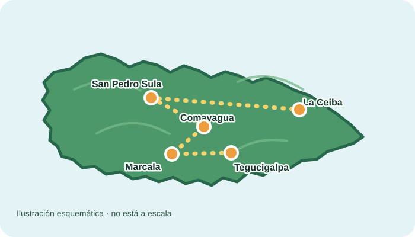

¡Bienvenido a la aventura!
Resuelve retos matemáticos para avanzar por distintos lugares de Honduras. Cada respuesta correcta te acerca a tu destino.
¿Cómo se juega?
- Lee el reto matemático.
- Piensa en la respuesta.
- Avanza por la ruta y descubre Honduras.
Tu ruta por Honduras
Ruta esquemática: muestra el orden de las paradas, no las distancias reales.

- Tegucigalpa Francisco Morazán
- Marcala La Paz
- Comayagua Comayagua
- San Pedro Sula Cortés
- La Ceiba Atlántida
Estás aquí: Tegucigalpa, Francisco Morazán.
Reto de la parada
Reto 1 de 5
Puntos: 0
Récord personal: 0
Escribe tu respuesta y pulsa “Comprobar”.
Medallas
Completa la ruta para ganar medallas.